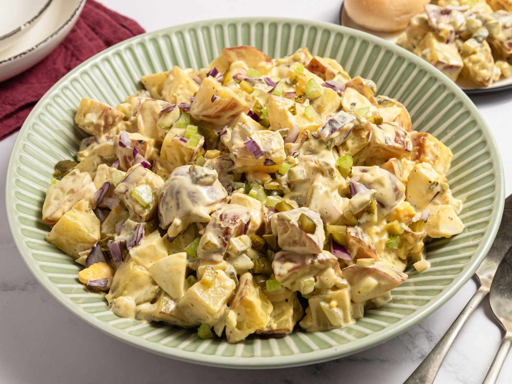

Old-Fashioned Potato Salad

Description
This potato salad recipe is for the traditional creamy type of potato salad, with eggs, celery, and relish. It's perfect for making ahead to let the flavors develop.
If you're looking for a classic, mayonnaise-based potato salad made with hard-boiled eggs, celery, and a little pickle relish for zing, this recipe is a proven winner. And it's so easy to make using everyday ingredients.
Ingredients
- 2 ½ medium potatoes
- 1 ½ large eggs
- ½ cup chopped celery
- ¼ cup chopped onion
- ¼ cup sweet pickle relish
- ⅛ cup mayonnaise
- ½ tablespoon prepared mustard
- ⅛ teaspoon garlic salt
- ⅛ teaspoon celery salt
- ground black pepper to taste
Steps
- Gather all ingredients.
- Bring a large pot of salted water to a boil. Add potatoes and cook until tender but still firm, about 15 minutes.
- Drain, cool, peel, and chop potatoes.
- While potatoes cook, place eggs in a saucepan and cover with cold water. Bring water to a boil; cover, remove from heat, and let eggs stand in hot water for 10 to 12 minutes.
- Remove eggs from hot water; cool, peel, and chop into chunks.
- Combine potatoes, eggs, celery, onion, relish, mayonnaise, mustard, garlic salt, celery salt, and pepper in a large bowl. Mix together until well combined.
- Chill potato salad in the refrigerator before serving for best flavor results. Enjoy!